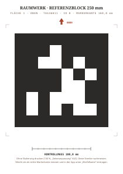
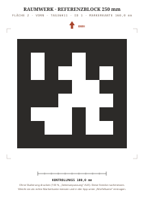
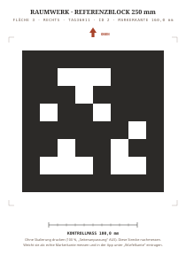
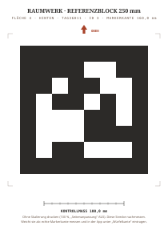
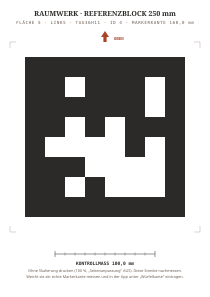
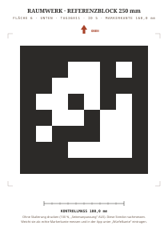

Wichtig: im Druckdialog Skalierung auf 100 % stellen („An Seite anpassen" ausschalten), Rand „keine/minimal".
Nach dem Druck das Kontrollmaß mit dem Lineal prüfen und die tatsächliche Markerkante in der App eintragen.
Papier: matt (kein Glanz, keine Glanzlaminierung) – Reflexe verhindern die Erkennung.





